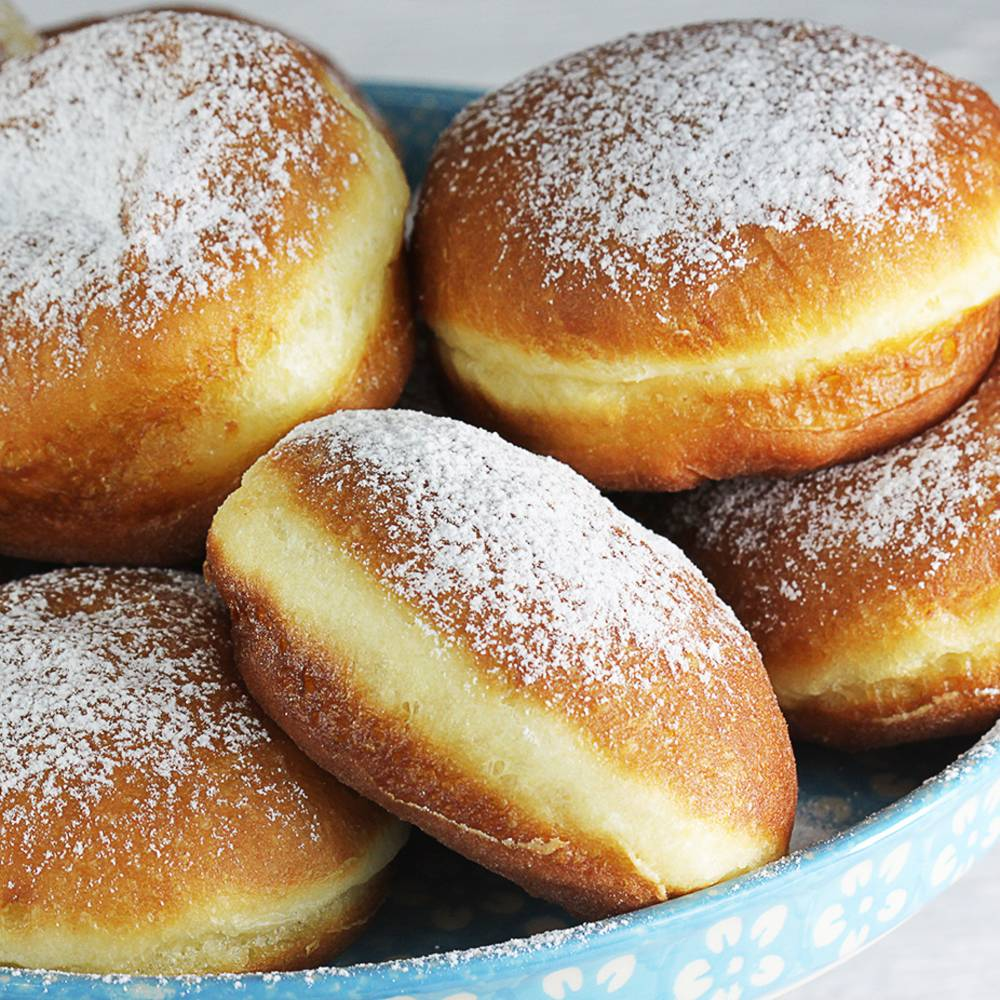

Pączki z Ziemnikami
Pączki z ziemniakami
Rewelacyjne pączki drożdżowe z dodatkiem gotowanych ziemniaków. Pączki z ziemniakami na słodko są super puchate
i delikatne. Smak ziemniaków nie jest wyczuwalny. Pączusie pięknie wyrastają tworząc obrączkę.

Składniki
500 g ugotowanych ziemniaków
600 g mąki pszennej
4 żółtka średnich jajek
50 g masła - 1/4 kostki
100 g cukru - około 1/3 szklanki
2 x 7 g suchych drożdży lub 40 g świeżych
1/3 szklanki ciepłego mleka
szczypta soli
mus owocowy do nadziewania pączków - mały słoiczek
Dodatkowe informacje
Dodatkowo do zrobienia pączków potrzebujesz: 1 litr oleju roślinnego do smażenia; blat lub stolnica z wałkiem +
mąka do podsypywania; wykrawaczka o średnicy 7,5 cm lub szklanka do wycinania pączków; duży i szeroki garnek;
ręczniki papierowe do kładzenia pączków po usmażeniu; szpryca z długim dziobkiem do nadziewania pączków lub
plastikowa duża strzykawka; cukier puder do oprószenia gotowych pączków.
Szklanka ma u mnie pojemność 250 ml.
W wersji wegetariańskiej pączki smażymy wyłącznie na oleju roślinnym.
Przepis
Krok 1. Jajka wyjmij wcześniej z lodówki. Mleko lekko podgrzej a masło roztop w rondelku na małej mocy palnika.
Ugotowane i przestudzone ziemniaki przepuść przez praskę lub zmiel w maszynce.
Krok 2. Ciasto drożdżowe z użyciem drożdży świeżych:
Zrób zaczyn od razu w misce, do której dodasz resztę składników na ciasto. Ze składników na ciasto uszczknij po
łyżce mąki, cukru oraz 3 łyżki ciepłego mleka i całe 40 gramów świeżych drożdży. Drożdże rozetrzyj z resztą
składników. Całość dobrze wymieszaj, przykryj ściereczką i odstaw w ciepłe miejsce na 15 minut. Zaczyn powinien
urosnąć i bardzo się spienić (w razie czego poczekaj jeszcze 10 minut). Dodaj resztę składników: mąka, zmielone
i przestudzone ziemniaki, cukier, 4 żółtka jaj, masło, mleko, szczypta soli. Ciasto wyrabiaj 10 minut. Postępuj
dalej tak samo jak przy drożdżach suchych - patrz wyżej.
Krok 3. Po tym czasie ciasto pięknie urośnie. Przygotuj sobie stolnicę. Wysyp na nią trochę mąki. Na tak
przygotowaną stolnicę przełóż wyrośnięte ciasto drożdżowe. Jak widać na zdjęciu, ciasto jest lekko lepkie.
Krok 4.
Ciasto oprósz odrobiną mąki również od góry. Po oprószeniu mąką ciasto idealnie się wałkuje. Rozwałkuj je na
grubość około 2-2,5 cm. Wykrawaczką o średnicy około 7,5 cm lub szklanką wycinaj pączki.
Krok 5. Pączki układaj na desce lekko oprószonej mąką. U mnie wyszło ich 25, więc przyda się do tego duży blat
lub szuflady z piekarnika. Ciasto po wycięciu (ścinki z ciasta, które zostały po wycinaniu poprzedniej partii)
ponownie lekko zagniataj, wałkuj i wycinaj krążki. Pączki delikatnie posyp tez mąką od góry, by podczas
wyrastania nie przykleiła się do nich ściereczka. Tak przygotowane pączki przykryte ściereczką bawełnianą,
odstaw na 30 minut w ciepłe miejsce.
Krok 6. Już po 10-20 minutach zauważysz jak pączki szybko rosną.
Krok 7. Podczas wyrastania pączków przygotuj sobie szeroki garnek, olej, ręczniki papierowe oraz cedzak do
łowienia pączków. Nagrzej dobrze olej. Po umieszczeniu odrobiny ciasta w oleju powinno ono od razu wypłynąć na
powierzchnię i zacząć skwierczeć. Olej może się nagrzewać nawet 10 minut i powinien osiągnąć temperaturę około
175 stopni.
Krok 8. Na nagrzany olej kładź po kilka pączków. Nie kładź ich za dużo na raz. Pączki jeszcze rosną w garnku a
powinny swobodnie w nim pływać. Smaż je na rumiano po około 3 minuty na stronę. Jeśli pączki za szybko się
rumienią - zmniejsz moc palnika. Nie można ich za szybko wyławiać ponieważ istnieje ryzyko, że będą w środku
surowe. Każdą partię odkładaj na ręcznik papierowy i na kratkę do przestudzenia.
Krok 9. Gotowe pączki wystarczy już tylko oprószyć cukrem pudrem.
Jeśli zdecydujesz się na to, by nadziać pączki musem owocowym lub lekką marmoladą, przygotuj sobie szeroką
plastikową strzykawkę (taka bez igły), rękaw cukierniczy z długą tylką lub jednorazowy i wąski worek
cukierniczy. W woreczku umieść wcześniej wymieszany mus i wstrzyknij z boku do każdego pączka. Ja użyłam tym
razem domowego musu z malin. Rzadsze przetwory jest łatwiej wstrzykiwać do pączków.